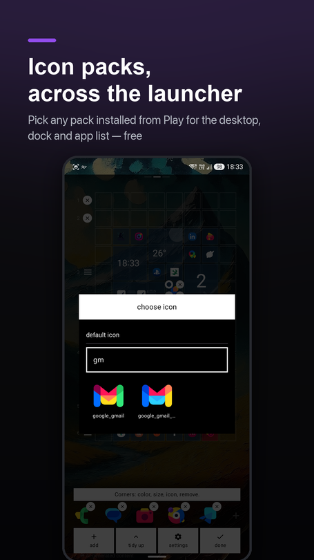
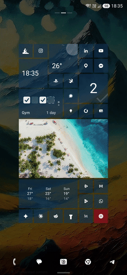

Icon packs, a dock you can finally edit, and a grid that behaves
Icon packs across the launcher, direct dock editing, and a grid that swaps and shifts tiles without surprise cascades.
Icon packs, everywhere the launcher draws an icon
What ships. Point sqTile at any icon pack you already have installed from Play, and it applies across the whole launcher — desktop, dock, app list. Picking the pack is free. Pinning a single icon from it to one tile, and giving the dock its own icon style so it stays monochrome under a colourful pack, are Pro.

This is the one I kept putting off, and it turned out to be the whole ballgame. Between packs, per-tile icons and per-tile colours, the desktop is genuinely yours now instead of a theme I picked for you.
The first version looked broken and wasn't. Icon packs went through the same glyph/silhouette pipeline as everything else, so a full-colour pack under the "glyph" style turned straight back into a glyph — a coloured pack that, switched on, looked exactly as dead as before. The fix is that pack art now draws the way its author drew it, full stop, and skips the pipeline entirely. The one exception is a pack that ships flat, white, single-tone glyphs on purpose, expecting the launcher to tint them — that kind still gets tinted, because handing it back untouched would mean a white shape floating with no plate under it.
The picker went blank on its own icons. With a few packs installed, the list runs into the thousands, and part of the grid just stopped rendering on a real phone. My first attempt made it slower: I shrank the decode target, which sounds like less work but isn't — the platform decodes the full PNG either way, so downscaling after the fact just adds a second allocation. What actually fixed it: skip the density upscale most decoders do by default, resolve every resource name once instead of on every scroll, drop names the pack declares but never ships, and cap the grid at three columns so only a dozen or so thumbnails are ever decoding at once. Confusing what a bitmap costs to hold with what it costs to make cost me an evening.
I had it behind the paywall until the night before shipping
1.4.2 sat at over 60 installs a day and two Pro purchases. That is not a sign that too little is locked — if people are leaving in the first session, it does not matter what is behind the paywall, because they never get there.
Icon packs were planned as entirely Pro, right up until the night before this release. Three things changed my mind, in order of how much they mattered: packs are table stakes for a launcher now, not a premium extra, and a paywall here reads as "this app charges for the basics"; it is also the worst possible moment for a paywall, because picking a pack is one of the first things anyone does after installing, on zero investment in the app; and per-tile pinning is honestly better suited to Pro anyway — it is for someone who already likes the desktop they built and wants to fuss over one tile, which is a different person than someone still deciding whether to keep the app at all.
The cost of the change was zero. The section was already its own locked block in the settings screen, so flipping it open was deleting one wrapper, not redesigning anything.
Editing the dock without leaving it
Swapping an app in the dock used to be impossible to do directly — you removed it with the X, then re-pinned from the app list, which dropped the new app into the first free slot rather than the one you had just emptied.

Now a tap on a slot in edit mode opens a picker that writes into exactly that slot, and the nearest empty one shows a plain "+". Reordering updates live as your finger crosses a neighbour, not just once you release — which sounds simple and took four separate fixes to feel right: the drag gesture was keyed on the very index it was changing, so it kept cancelling itself mid-drag; a fast swipe could outrun the database write and grab the wrong icon; the icon under your finger was keyed by slot number, so a reorder kept the gesture but silently swapped which app it was dragging; and the offset that compensates for the jump was applied a frame before the layout knew about the new order, so icons visibly hopped a beat too early.
One bad rule, four bugs that didn't look related
I spent one evening dragging tiles around on my own phone and hit four different-looking bugs, all from the same desktop, all from the same root cause.
Since the grid doubled from four columns to eight, a full-size tile snapped to even positions. That reads as "aligned" only if every row above it has a whole number of cell-heights — and one row of small, half-unit shortcut icons under the clock was enough to push everything below it onto odd rows, where "even" had stopped meaning anything at all. From there: a tile dragged into an obviously empty gap would land a whole cell too far and shove a gallery tile out of the way; a tile dropped halfway onto a neighbour would land on an even row that nothing corrected, and sit there straddling two rows; a sideways swap would end up shoving something down instead, because the collision logic only knew how to push along a row; and a tile aimed at the gap next to a small icon would instead snap to the neighbour a whole row above it.

The fix drops the even-position rule entirely. A drop now weighs two candidate landings — the raw drop point, and a whole-cell step counted from wherever the tile is already standing, not from the edge of the grid — and whichever one moves fewer other tiles wins. One rule instead of four special cases, and it happens to fix all four symptoms at once, because "move the least" is what a sensible drop looks like in every one of them. Two same-size tiles that land exactly on each other's footprint now swap outright, restricted to actual neighbours after an on-device test showed a drop two cells away flinging the tile in between four rows down for no visible reason. The last of it — a one-frame flicker on drop — turned out to be the same class of bug as the dock reorder above: the position offset was compensated a frame late, so it briefly drew a whole cell off. Same fix, applied the same way.
Also in 1.4.3
- Sharper photos in gallery tiles, especially wide ones — the cache now remembers the size it decoded a photo for, not just its address, so a freshly added photo no longer inherits a thumbnail meant for a small picker.
- Uninstall an app straight from the app list, long-press menu, instead of three taps through system app info.
- Buttons, spinners and dialog captions no longer disappear when the accent colour happens to match a role the theme never actually assigned to them.
- The app version now sits at the bottom of settings — for every support message that starts with "which version are you on."
What's next
Last post said icon packs were next. They're here. The honest answer this time is 1.4.4, already out by the time this goes up: the launcher stops painting over your wallpaper. That one gets its own post.
sqTile is on Google Play, in English, Polish, German, Italian and Ukrainian. Free, with a single one-time Pro unlock and no subscription. No ads, no analytics SDK, no account.